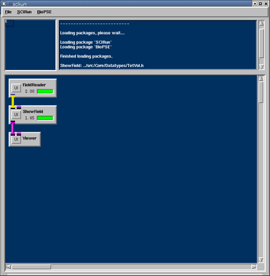
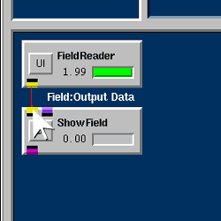
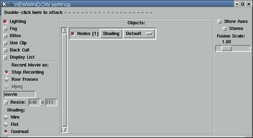

|
Chapter Overview In this first chapter, we will construct a SCIRun network (see the
User's Guide 3.0,
Starting SCIRun) that performs a visualization task:
rendering a
tetrahedral mesh. Our "net," will consist of three
types of modules: data reader, geometry converter, and renderer. These modules are FieldReader, ShowField, and Viewer. We will read the Field data from a file, set some rendering
properties for the nodes, edges, and faces (the
nodes will be rendered as blue spheres), and render the
geometry to the screen in an interactive Viewer window. To begin, we will construct a net (as shown,
completed, in Figure 1.1), and in the chapters that follow, we will
expand on this network, adding more features and
functionality as we progress. 
You should set two environment variables in your shell before starting SCIRun. For more information about environment variables, you may consult the User's Guide 3.4, SCIRun_DATA. This process assumes that you have downloaded the SCIRunData directory, a separate download from the SCIRun build.
To begin, we will construct a network that loads a geometric mesh from disk and renders it to the screen. In your Unix shell window:
Having set these environment variables, you are now ready to start SCIRun.
The NetworkEditor screen consists of three frames: the GlobalView frame in the left uppermost corner; the Error frame in the right uppermost corner, and the NetEdit frame. The NetEdit frame is a large area in which you will construct your networks of modules. Since the NetEdit frame is so extensive, the Global View frame shows you which part of the NetEdit frame you are currently viewing. The Error frame will show errors that appear in red during startup, or during the execution of a net.
A module is a single-purpose unit that functions within a dataflow environment. Modules will always have at least one input port for receiving data, located at the top of the module, or one output port for sending data, located at the bottom. For a more complete description of modules, you may consult the User's Guide, Section 2.3 Modules and Networks>. Each datatype in SCIRun has a unique color such as yellow, purple, or pink. You may connect ports of the same color. These colors are described in more detail in the User's Guide, Section 4.2, Anatomy of a Module. By joining the modules together, data passes from one module to another; two or more connected modules form a SCIRun network ("net"). We will first create a FieldReader module that loads a SCIRun Field.
To find out more about using nets, see the User's Guide 4.0, Working with Networks.
Set the user interface (UI) settings for the FieldReader module:
A Field contains a geometric mesh and a collection of data values mapped onto that mesh. Data can be stored at the nodes, edges, faces, and cells of the mesh. In this case, we use a tetrahedral mesh with voltages defined at the nodes of the mesh. The dimensionality of the mesh type limits the available storage locations. For example, TriSurf has nodes, edges, and planar faces, but not cells, which we assume to be three-dimensional elements. As a result, a TriSurf cannot store any data in cells--but it can store data in edges or faces. The brief overview below describes the various types of geometric meshes, data values, and mappings that SCIRun supports. SCIRun has eight different geometric meshes available for Fields:
The following data types can be stored in a Field:
We will now add a second module to our network to visualize various Field types. You will connect the two modules in your canvas so that data can flow between them.

Setting the ShowField User Interface The ShowField module has options for changing the visual representations of a Field's geometry. For example, in the dataset we have just loaded (using the FieldReader module), you will change the color of the nodes to blue spheres.
We will now change the scale and resolution of the nodes.
The ShowField module is now ready to render the nodes as blue spheres. The module will "Interactively Update", by default, to execute after every change. Or, you may select "Execute Button Only" that holds all changes until you press the Execute button. Consult the User's Guide 4.5, Executing a Network for more details. ShowField works with any of the SCIRun Field data types. These data types must be first compiled into a shared library as needed where they are saved for future use. This process is called "Dynamic Compilation." As a result, Dynamic Compilation causes a delay when the module executes for the first time. For more detail about this process, refer to the PDF document Dynamic Compilation or the Developer's Guide, Section . The Viewer module is the last that we will add to our network. You may find more information about the Viewer in the User's Guide 5.0, Visualization with the Viewer.
Since the Viewer is one of the most important modules of SCIRun, you may want to know more about its functionality. The User's Guide 5.1, Anatomy of the Viewer Window provides a full description of the Viewer. Figure 1.10 shows the Viewer window from the network you have built earlier in this chapter. In the lower right corner of the Viewer's window you will find buttons for controlling the display. However, the controls you will use most frequently are not visible. The mouse has functionality that works with the Viewer. The User's Guide 5.2, Mouse Control in the Viewer provides more complete information. To get a feel for this functionality:
To picture the rotation action of the mouse, imagine the objects sitting within a sphere. To grab a point on the sphere, click the middle mouse button. Moving the mouse drags that point on the sphere around as if the sphere were free to rotate but not to shift its position. By this mechanism, the actual movement of the objects depends on the point you click on before moving the mouse. To use an analogy, this is like placing a floating ball in a bowl full of water, touching the ball only at one point, and then rotating the ball by moving your finger. Using this type of mouse control, objects can rotate in three dimensions while the mouse moves only in two. With experimentation, you will be able to orient objects in whatever direction you wish through simple mouse manipulations. Clicking and dragging the right mouse button causes the contents of the Viewer window to get larger and smaller. This creates the impression of moving closer in or further away from the contents of the window (Figure 1.10.1).
Now we will use the controls in the Viewer
window below the objects (Figure 1.10.2). Here, you see buttons
for the
following functions:
To access even more display options:

Each object has its own list entry in the Extended Control Window. Settings that determine the rendering of each associated object are located in the object list. These settings may even turn the entire object on or off,(i.e., make it appear or disappear). Default settings apply to all objects that contain the "default" selection. We suggest that you manipulate all of these settings to see their possible effects, and consult the User's Guide for a more complete description. Learn more about the Viewer's components in the User's Guide 5.0, Visualization with the Viewer The three-module network that we created earlier provides the foundation for the nets we create through the rest of this tutorial. Now we will examine how to save nets to disk and reload them in a future SCIRun session. To save a SCIRun network (Figure 1.11):
The net should reload into SCIRun, where it was when you saved it. After changing anything in the display (e.g., rotating the view in the Viewer Window or changing the rendering color of the nodes in ShowField), then there are two options to re-save the net:
For more information on the File menu options (such as Insert and Clear), please refer to User's Guide 4.0, Working with Networks.
In this chapter, we created a three module network to visualize the geometry of a mesh. We rendered that mesh to the viewing window, and practiced saving and reloading networks. The next chapter features additional tools to examine data values,
and instructions for varying colors over the geometry.
|


 PointCloudMesh: unconnected points.
PointCloudMesh: unconnected points. ScanlineMesh:a regularly segmented straight line
(a regular 1D grid).
ScanlineMesh:a regularly segmented straight line
(a regular 1D grid). CurveMesh: a segmented curve.
CurveMesh: a segmented curve. ImageMesh: a regular 2D grid.
ImageMesh: a regular 2D grid. TriSurfMesh: a surface made of connected triangles.
TriSurfMesh: a surface made of connected triangles. QuadSurfMesh: a surface made of connected quadrilaterals.
QuadSurfMesh: a surface made of connected quadrilaterals. LatVolMesh: a regular 3D grid.
LatVolMesh: a regular 3D grid. TetVolMesh: a subdivision of space into tetrahedral elements.
TetVolMesh: a subdivision of space into tetrahedral elements. HexVolMesh: a subdivision of space into hexagonal elements.
HexVolMesh: a subdivision of space into hexagonal elements.